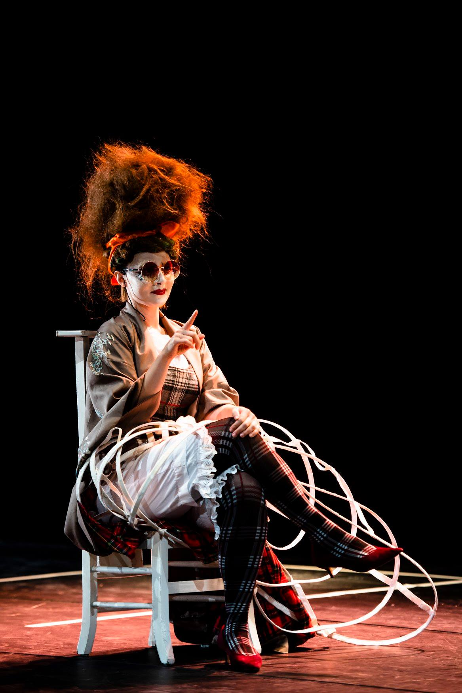
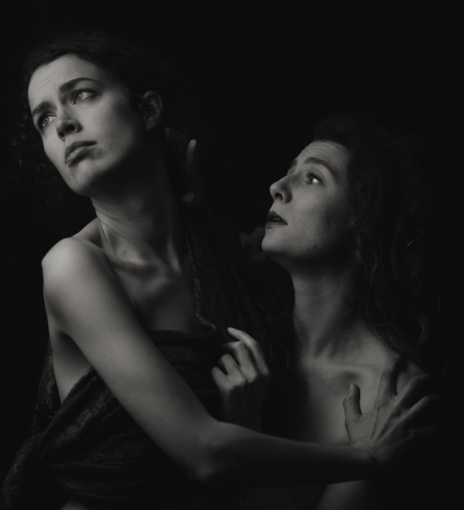
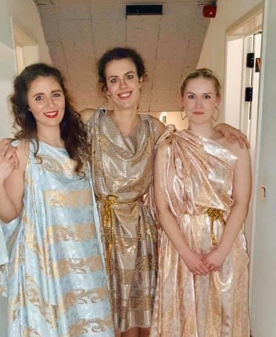
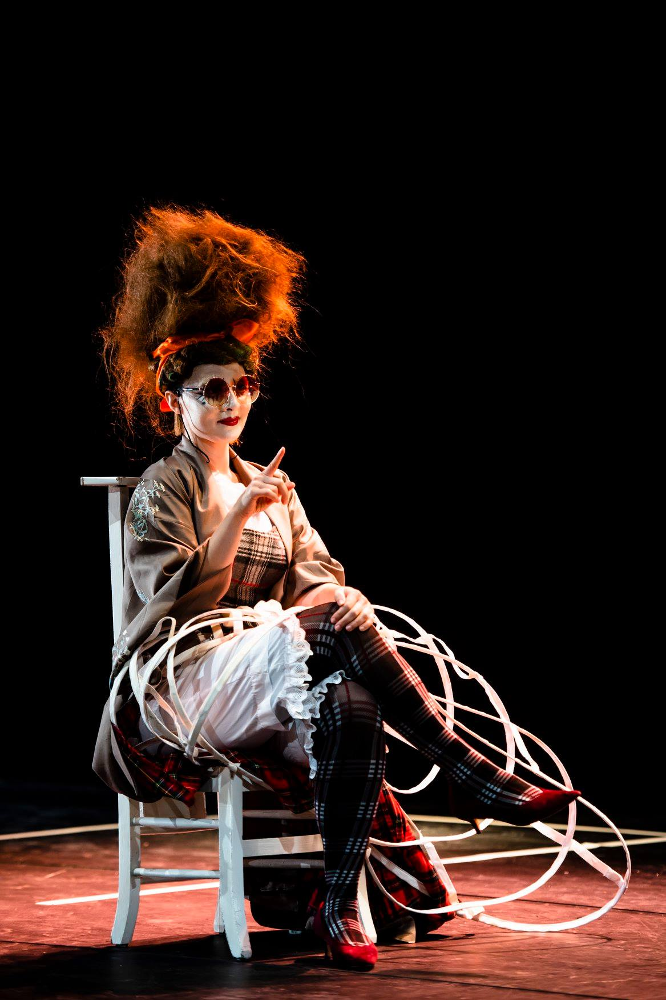
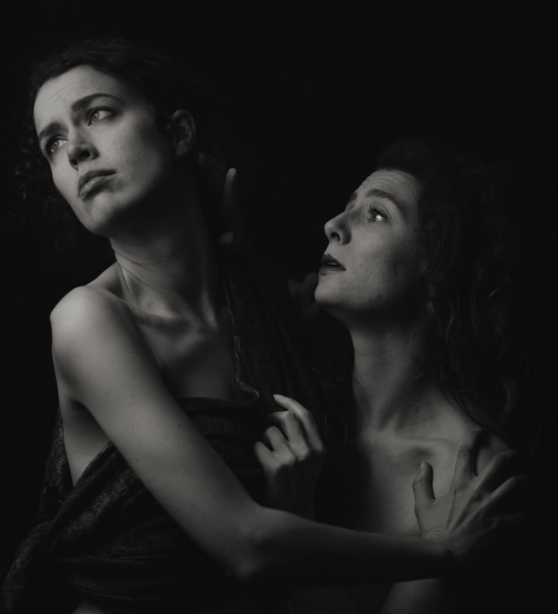
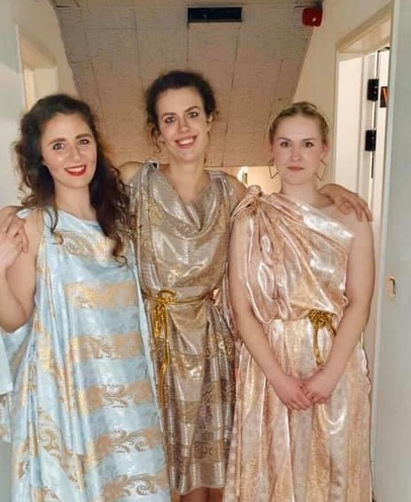
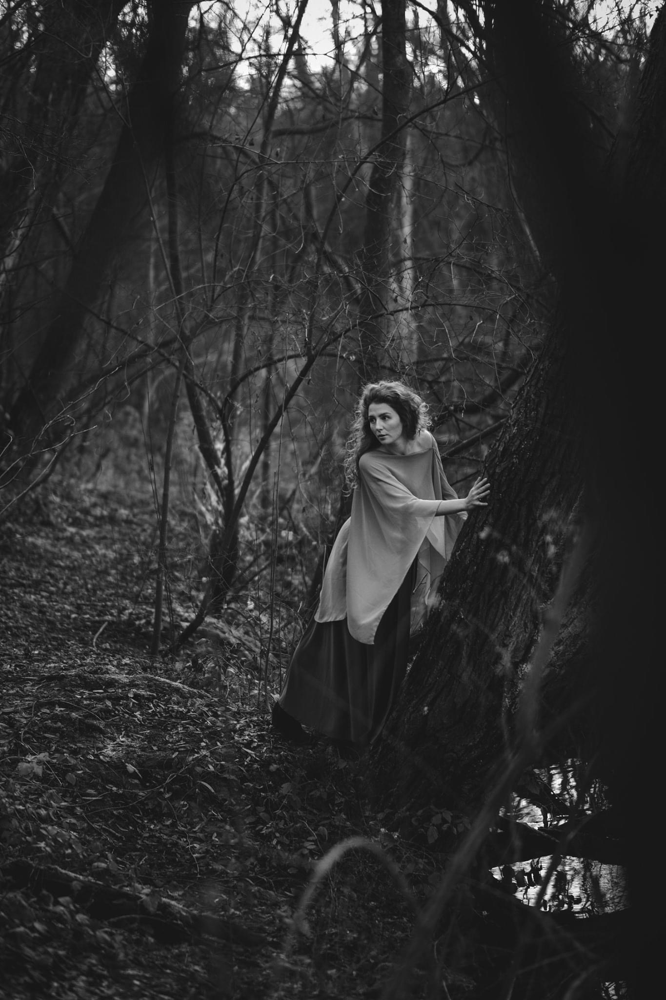
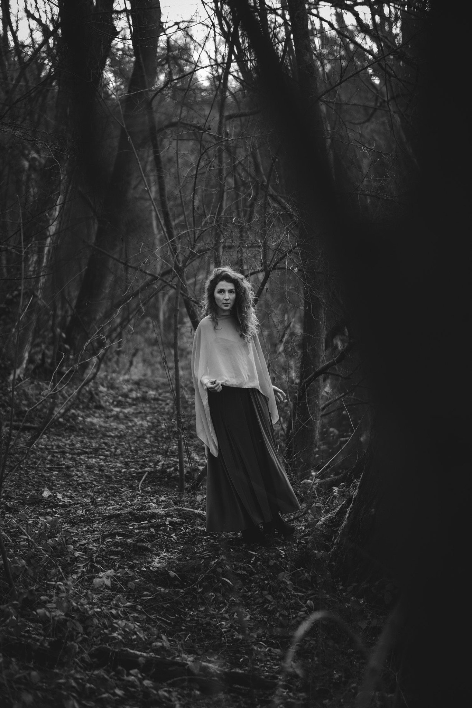
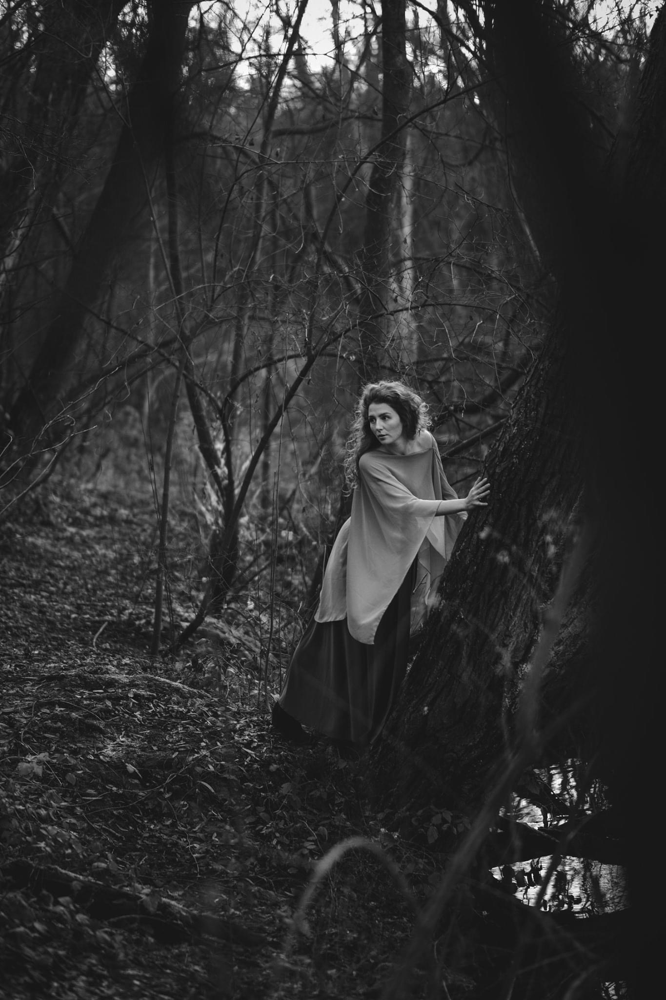
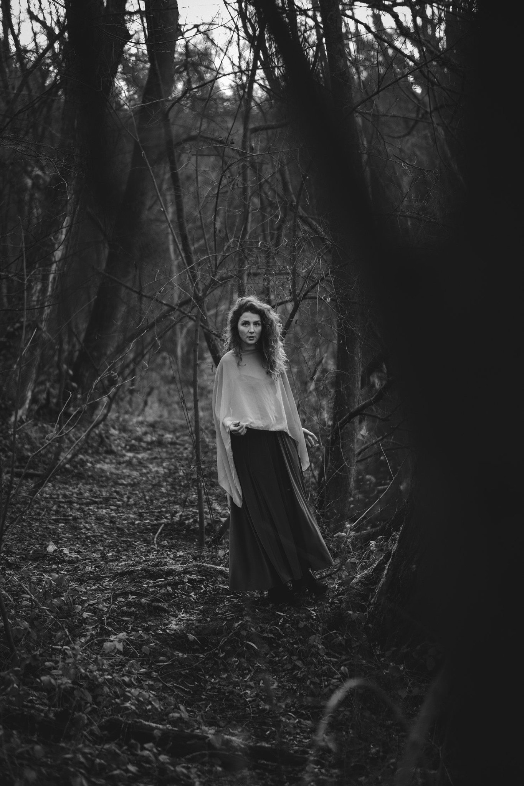

Bio
Hannah Moss is an American lyric soprano currently studying at the Koninklijk Conservatorium Antwerepen. She began singing when she was 15 and has taken part in operas, concerts, and masterclasses in The United States, England, France, Italy, Israel, Belgium, Germany, and Indonesia. Before moving to Antwerp in 2018 she studied musical theatre and then changed majors to classical vocal performance at Russell Sage College in New York with teacher Kara Cornell and sang with opera companies Mosaic Arts Opera (Suor Genovieffa in Suor Angelica) and Hubbard Hall Opera (Mother Hansel and Gretel). Directly after graduating college she moved to Italy for three years to learn Italian and sing in Tuscany with Lucca Opera Festival, Gli Angeli Custodi (Puccini concerts) and Istituto Musicale Baralli (Suor Osmina in Suor Angelica). In 2015 she moved to Berlin where she studied with Abbie Furmanksy and was one of the co-founders and artists for the opera company Alltagsoper (Donna Anna in Don Giovanni and Sandmännchen/Taumännchen in Hänsel und Gretel). Hannah was also accepted to sing with the International Master Class Berlin under Lior Shambadal in 2015 and performed as a soloist with The Diplomatic Choir and The Syrian Expat Philharmonic Orchestra at the Gedächtniskirche. In the fall of 2016 she sang in the Specs On International Feminist Art Music Festival in Berlin as part of a piece entitled The Ballad of East Meets West and made her debut with Amici Arts in a night of American opera followed by an opera gala in Antwerp with music by Mozart, Puccini, and Donizetti. In the summer of 2017 she performed the role of Blanche de la Force (Les Dialogues des Carmélites) under the musical direction of Thomas Cadenbach (Semperoper Dresden) in Berlin. She was invited to make her debut performance with the Indonesia Opera Society in Jakarta in 2017. Her final performance in Berlin before moving to Antwerp in 2018 was in the world premiere of Stephen Crowe’s Honeyvoiced Mythweaver: Sappho Songs at the Acker Stadt Palast. In the summer of 2018, she took part in Le Petite Bande Summer Academy working closely with Sigiswald and Marie Kuijken on Mozart scenes. Currently working on her masters degree from The Royal Conservatory Antwerp, she has recently appeared as Female Chorus in The Rape of Lucretia at Het Oude Badhuis and Lady Billows in Albert Herring under the scenical direction of Benoît De Leersnyder and musical direction of Michiel Delange. In 2019 she had the opportunity to perform in a recital sponsored generously by The Robus Foundation in Antwerp with pianist Aäron Wajnberg. She then starred alongside Stefaan Degand and Stefan Cifolelli in the premiere of Robert Groslot’s most recent opera “Macho!” with the company Deep Bridge. She currently studies with Gary Jankowski.
Media
 







 



Contact
For bookings, questions, or other queries, contact Hannah directly at:
hannah.moss7@gmail.com